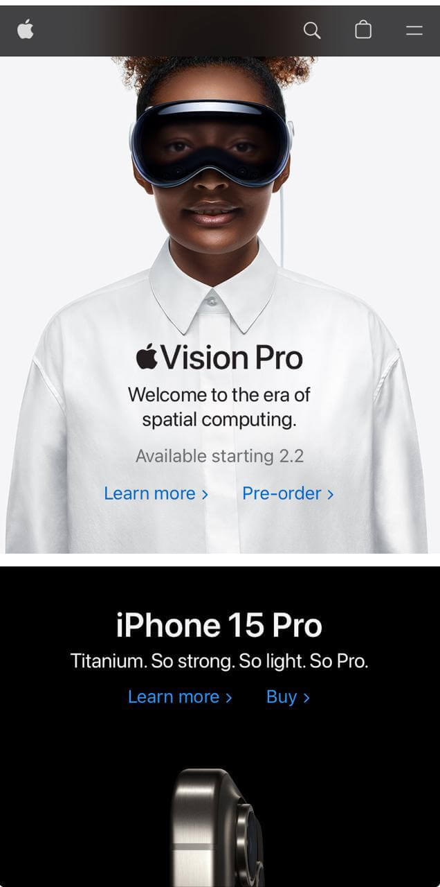

ESPN
ESPNThe principle of proximity in design refers to the organization of related elements in close proximity to each other. When elements are close to each other, users tend to perceive them as a group or coherent unit. This principle helps organize information, facilitates visual reading and comprehension, and allows users to quickly identify the relationship between elements.
Apple
Apple Repetition in design refers to the consistency and reuse of visual elements throughout an interface to establish a visual identity and improve user understanding. Some of the elements that can be repeated include colors, fonts, icons, buttons and design patterns. Repetition helps create a cohesive and unified look and feel throughout the interface, making it easier for the user to navigate and understand.
Nike
NikeThe principle of contrast in design refers to the visual difference between elements to highlight their importance and create visual impact. By using contrast, designers can highlight certain elements, make content more readable and enhance visual hierarchy. Contrast can manifest itself in differences in color, size, shape, font type and other visual attributes.